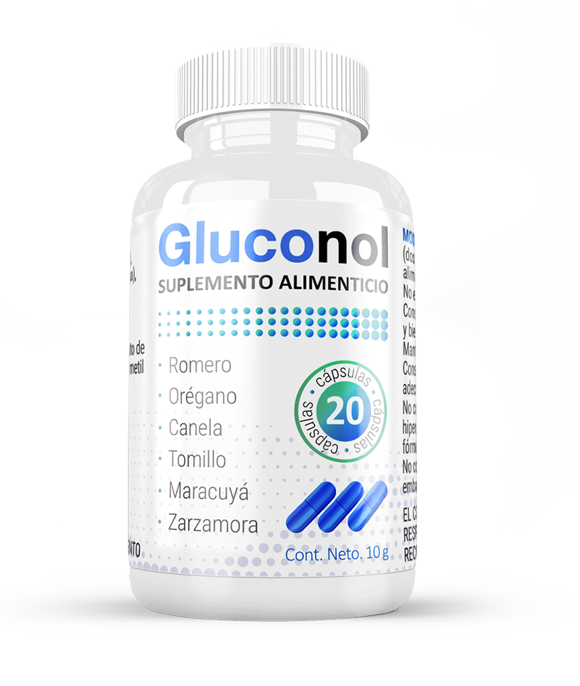

El aumento en el número de diabéticos asusta a los especialistas de todo el mundo y los pronósticos son cada vez peores. El número de pacientes solo según datos confirmados en el último año aumentó en un récord de 12%. Los médicos prenden las alarmas: es urgente tener conciencia de la población sobre las enfermedades endocrinológicas.
A partir de esta entrevista, conocerá todo sobre el diagnóstico y el tratamiento de la diabetes de un verdadero especialista.
¡Buenas! Cuéntenos sobre la diabetes mellitus, por favor.
Hola a todos. Se puede hablar mucho sobre la diabetes, comenzaré con lo básico. La diabetes mellitus es una enfermedad crónica en la que los niveles de glucosa en la sangre aumentan. Los síntomas principales son la sed constante y la micción frecuente.
¿Hay más síntomas?
La diabetes mellitus puede ser asintomática. Con mayor frecuencia se detecta bastante tarde, cuando la enfermedad ya se ha desarrollado y ha tenido un gran impacto en la salud humana. Es por eso que es tan importante hacerse chequeos regularmente. Además de la sed, hay otros signos:
- hormigueo en las piernas;
- alteración de la visión;
- somnolencia exacerbada;
- fatiga crónica;
- cicatrización lenta de heridas;
- pérdida o aumento de peso;
- infección por hongos.
RECUERDEN QUE EL NIVEL NORMAL DE AZÚCAR EN SANGRE EN AYUNAS ES NO MENOS DE 6,1 MMOL/L, Y LUEGO DE IGNERIR ALIMENTOS 7,8 MMOL/L!
¿Cuántos tipos de diabetes existen? ¿Cómo podemos distinguirlos?
En medicina, es común dividir la diabetes mellitus tipo I y II. La tipo I ocurre debido a una falla en el sistema inmunológico, una disminución en la producción de insulina. En el tipo II, el cuerpo no percibe la insulina producida. La mayoría de las personas con diabetes tienen el tipo dos.
También hay manifestaciones individuales, por ejemplo, diabetes gestacional. Se desarrolla en mujeres durante el embarazo y la lactancia. Con un enfoque cuidadoso de este estado, es muy posible volver a una vida sana y plena.
¿Quién más está predispuesto a desarrollar la enfermedad?
La aparición de diabetes mellitus está influenciada por muchos factores:
- obesidad;
- estilo de vida sedentario;
- mala nutrición;
- fallos del sistema inmune;
- tomar ciertos medicamentos (por ejemplo, anticonceptivos).
¿Cómo controlar el azúcar en la sangre?
Primero, hay que tener cuidado con eso. Elegir una dieta más saludable, un ejercicio moderado y una actitud positiva ayudarán a controlar la enfermedad más fácilmente. Y con los medicamentos correctivos, te olvidarás de la enfermedad por completo.
¿Se puede curar la diabetes?
Desafortunadamente, si una persona está enferma, entonces es para siempre. Al menos ese es un punto de vista generalmente aceptado. Todos los medicamentos se seleccionan individualmente para el paciente. Cada producto actúa de manera diferente, y cada uno tiene sus propios efectos secundarios.
Las incretinas son hormonas del tracto gastrointestinal que estimulan la producción de insulina, se administran por inyección. Contras:
- malestar estomacal;
- diarrea;
- vómito.
Los inhibidores de la alfa-glucosada se toman junto con otros agentes reductores de azúcar, pero su eficacia es mínima. Contras:
- náuseas;
- colitis ulcerosa;
- gases.
Las biguanidas provocan una disminución de la resistencia a la insulina, sin embargo, afectan negativamente el sistema digestivo. Contras:
- dolor estomacal;
- temperatura corporal baja;
- sensación de enajenación;
- vómito.
Las glinidas estimulan la síntesis de insulina endógena, su ingesta asegura el aumento de peso corporal. Las tiazolidindionas aumentan la sensibilidad a la insulina al afectar el tejido adiposo, los músculos y el hígado. Contras:
- hinchazón en todo el cuerpo;
- costo alto;
- efecto muy lento.

¿Entonces todos los medicamentos tienen un efecto negativo?
No todos, pero muchos.
Años de investigación de científicos han demostrado que la mayoría de las sustancias activas en los medicamentos son en realidad peligrosas y tienen un efecto negativo en el cuerpo. Tomar pastillas para la diabetes afecta constantemente los órganos internos. Además de lo anterior, los medicamentos de calidad relativamente son muy caros.
Sin embargo, recientemente apareció en el mercado un producto que ayudará a reducir el azúcar a niveles normales sin dañar la salud. En este caso, el precio es asequible.
¿Y de qué se trata?
El producto se llama, es una composición natural basada en extractos de plantas que no solo no es inferior a las fórmulas sintéticas, sino que también las supera porque no tiene efectos secundarios.

¿Cómo funciona?
se ha desarrollado a partir de plantas medicinales. Sus propiedades han sido conocidas por el hombre durante mucho tiempo, pero el enfoque científico permite sacar el máximo provecho de ellas. Por lo tanto, con una cuidadosa proporción, los componentes se superponen entre sí y refuerzan las propiedades negativas.
El remedio permite:
- normalizar el sueño;
- restaurar el metabolismo;
- fortalecer la inmunidad;
- reducir el colesterol;
- eliminar la fatiga crónica y mejorar el rendimiento.
regula de forma natural el nivel en sangre. Hace que la insulina funcione.
Incluso durante los ensayos clínicos, nueve de cada diez pacientes experimentaron mejoría después de la primera semana de uso. Durante más de un año en mi práctica, lo recomiendo a los pacientes, y no he recibido una sola crítica negativa, ni una sola queja. Solo positivas.
¿El lo prescribe solo un médico? ¿Dónde se puede comprar?
Debido a la pandemia el fabricante está ofreciendo el producto solo en el sitio oficial. Para hacer el pedido, no se necesitan recetas.
Quiero agradecerle por la entrevista tan detallada. Tal vez hoy nuestros lectores hayan aprendido un poco más sobre su salud.
Me da mucho gusto haberles ayudado. También quería advertir a todos los lectores: la diabetes mellitus es una enfermedad extremadamente peligrosa. No dejemos pasar el tratamiento. Mientras te quedas con las dudas, está destruyendo tu cuerpo. Así que hay que estar alerta y cuidar nuestra salud.